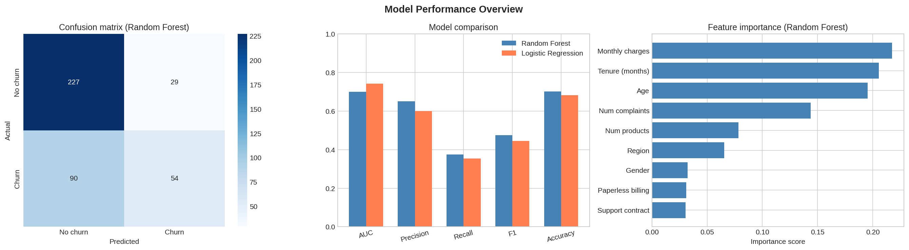
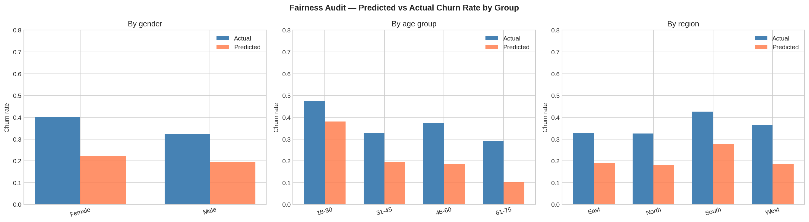

This report audits a Random Forest model trained to predict customer churn. The model achieves an AUC of 0.7 and an F1-score of 0.476, indicating moderate performance. Fairness analysis across gender, age, and region reveals moderate disparities requiring attention. The overall governance risk rating is HIGH.
| Metric | Random Forest | Logistic Regression | Assessment |
|---|---|---|---|
| ROC-AUC | 0.7 | 0.743 | Moderate |
| Precision | 0.651 | 0.6 | Acceptable |
| Recall | 0.375 | 0.354 | Review false negatives |
| F1-score | 0.476 | 0.445 | Balanced metric |
| Accuracy | 0.702 | 0.682 | Baseline check |

The top three drivers of churn prediction are:
Governance note: Age and Gender appear in the feature set. Under the EU AI Act and GDPR, using demographic attributes in automated financial decisions requires explicit justification and ongoing monitoring.

| Group | N | Actual churn | Predicted churn | Recall | Precision |
|---|---|---|---|---|---|
| Female | 190 | 0.4 | 0.221 | 0.421 | 0.762 |
| Male | 210 | 0.324 | 0.195 | 0.324 | 0.537 |
Demographic parity gap: 0.026 Equal opportunity gap: 0.097
| Group | N | Actual churn | Predicted churn | Recall | Precision |
|---|---|---|---|---|---|
| 18-30 | 84 | 0.476 | 0.381 | 0.575 | 0.719 |
| 31-45 | 107 | 0.327 | 0.196 | 0.314 | 0.524 |
| 46-60 | 102 | 0.373 | 0.186 | 0.342 | 0.684 |
| 61-75 | 107 | 0.29 | 0.103 | 0.226 | 0.636 |
Demographic parity gap: 0.278 Equal opportunity gap: 0.349
HIGH Significant fairness gaps detected across protected groups.